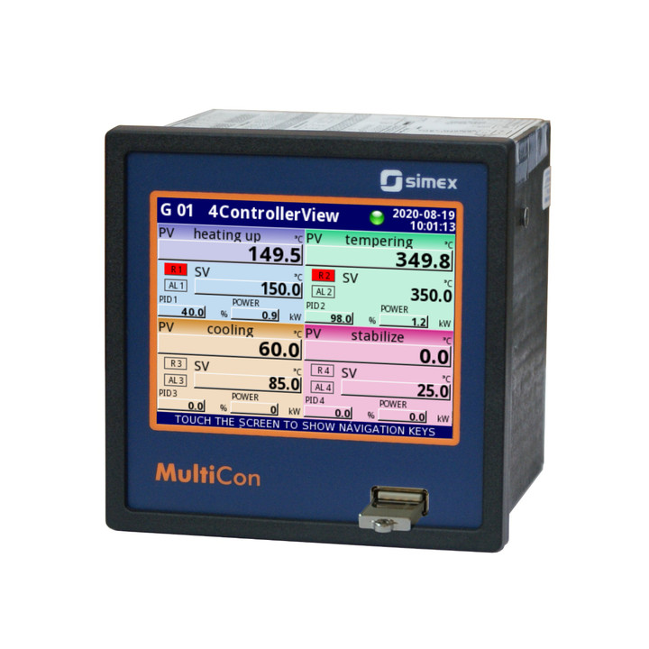
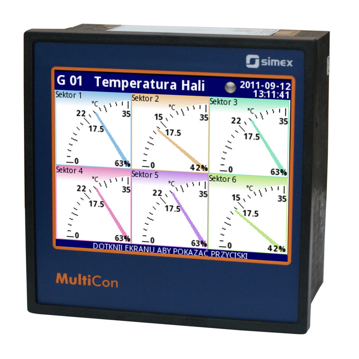
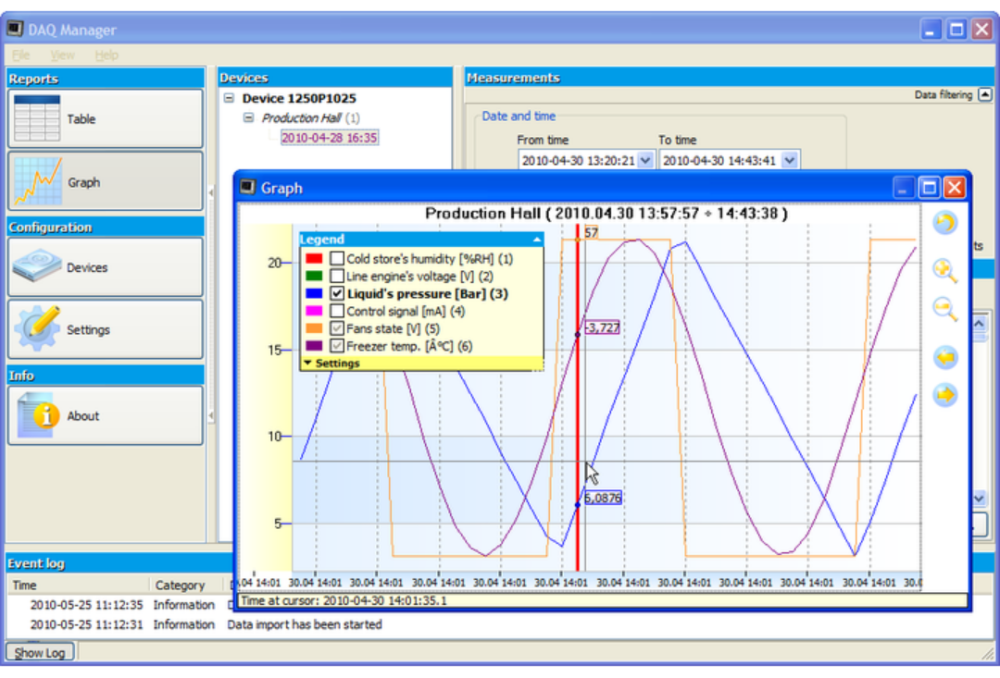
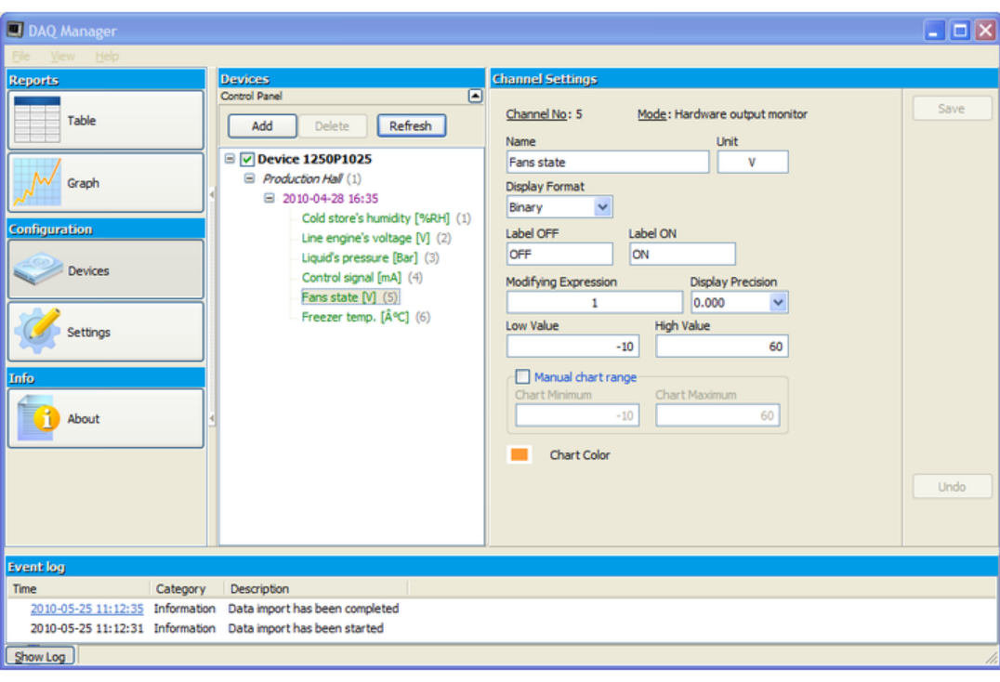

계측기 + 컨트롤러 + HMI + SCADA의 기능이 하나로 통합된 SIMEX사의 다채널 데이터 레코더 MultiCon. 전압·전류·압력·온도·변위·Force 등 다양한 신호를 계측해 실시간 모니터링과 제어를 동시에 지원합니다.
SIMEX사의 다채널 데이터 레코더·데이터 로거인 MultiCon은 계측기 + 컨트롤러 + HMI + SCADA의 기능이 하나로 통합된 시스템입니다. 전압, 전류, 압력, 온도, 변위, Force 등 다양한 신호 및 센서 신호를 계측하여 실시간 모니터링을 지원하며, 산업 자동 제어의 고급 애플리케이션에 활용됩니다.
RS-485 통신과 이더넷 인터페이스를 지원해 인터넷을 통한 원격 장치 모니터링이 가능하며, 슬롯형 입력 채널로 원하는 신호 측정 조합을 자유롭게 구성할 수 있습니다.


MultiCon 라인은 하나의 소형 장치에서 많은 수의 내장 입력/출력을 지원합니다. 슬롯형 입력 채널을 지원하기 때문에 원하는 신호 측정 조합이 용이하며, 가상 채널을 지원하여 직접 측정 판독, 수학 함수, 타이머, 프로필 생성이 가능하고 손쉽게 채널을 확장할 수 있습니다.


| 아날로그 신호 | 최대 15채널 유니버설, 절연형: 0/4~20mA, 0/1~5V, 0/2~10V |
|---|---|
| 써모커플 | J, K, S, T, N, R, B, E |
| 저항 | 0~300Ω, 0~3kΩ |
| RTD, PT | Pt100, Pt500, Pt1000(PN-EN); Pt'50, Pt'100, Pt'500(GOST) |
| 카운터·플로우미터 | 최대 12개(counter / flowmeter / ratemeter) |
| 디지털 입력 | 최대 73개 |
| 아날로그 출력 | 최대 24채널, 절연형 4-20mA |
|---|---|
| 릴레이 | 최대 36개(1A/250V), 최대 18개(5A/250V) |
| SSR | 최대 72개 |
| 전원 | 1 x 24V DC ±5%, 최대 200mA |


MultiCon 슬롯형 입출력 모듈 구성 — 전원·입력·출력 카드를 필요에 맞게 조합해 확장
| Basic version | RS-485, 1 x USB Host(전면 또는 후면) |
|---|---|
| ETU | 1 또는 2 x USB Host, 1 x Ethernet 10Mb/s |
| ACM | 2 x RS-485, 1 x RS-485/232, 1 또는 2 x USB Host, 1 x Ethernet 10Mb/s |
| 지원 프로토콜 | Modbus RTU(Master/Slave), Modbus TCP Server, HTTP |
이더넷·USB 지원으로 PC 소프트웨어를 통한 데이터 확인, 설정, 원격 모니터링이 가능합니다.


MultiCon PC 소프트웨어 — 이더넷·USB 연동
SIMEX MultiCon은 산업 현장에서 컨트롤러와 데이터 레코더 기능을 동시에 지원하는 강력한 시스템이며, 합리적인 금액의 다채널 데이터 로거로 다양한 산업 자동화·모니터링 애플리케이션에 활용됩니다.
관련 기술 자료 더 보기:
SIMEX MultiCon 산업용 컨트롤러 관련 질문
필요 입출력 채널 수, 계측 신호 종류, 통신 프로토콜(Modbus·이더넷 등)을 알려주시면 최적의 MultiCon 구성을 제안해 드립니다.